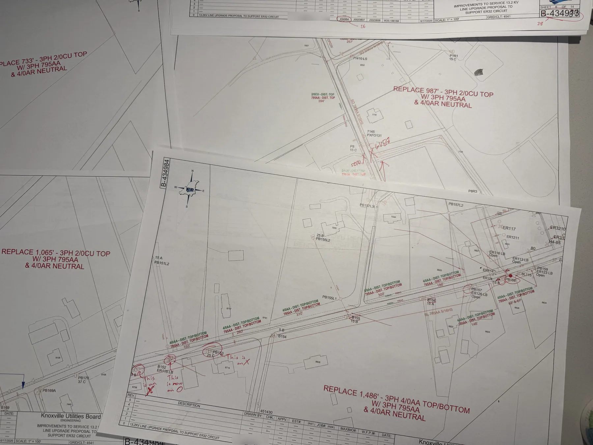
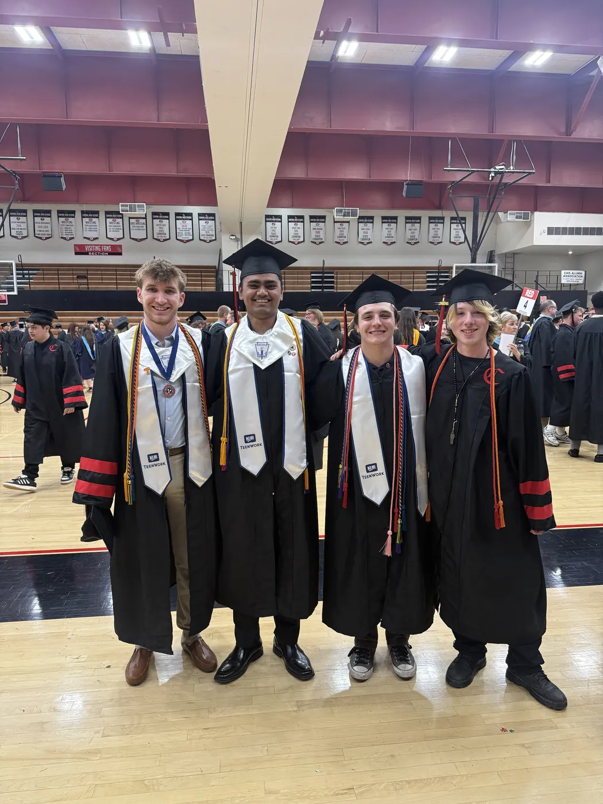
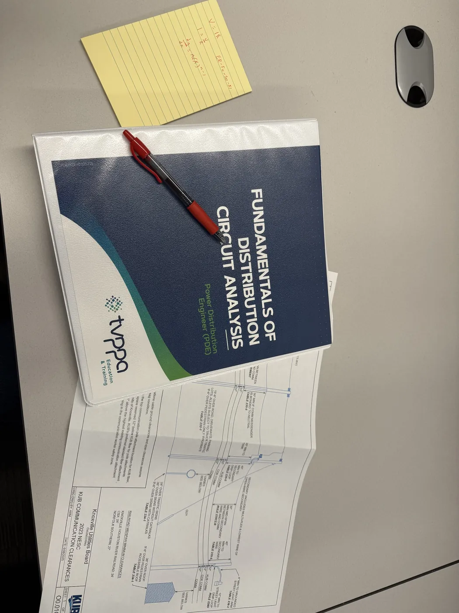

Electric Systems Engineering Intern
Knoxville Utilities Board (KUB)
Jun 2025 – Jul 2025; Dec 2025 – Jan 2026
I split my time between office design work and field inspections, roughly a third of it in the field, verifying customer complaints and confirming structure locations that GIS records couldn’t reliably provide.


Fulton High School greenway relocation
When the City of Knoxville planned a new greenway near Fulton High School, an existing utility pole and its service line had to move to make room. I designed the pole relocation and the redesign of the adjacent service line, using PLS CADD to run finite element analysis on the affected poles. The work was reviewed and approved by a KUB engineer.

Central Magnet Academy service design
For a new sign at Central Magnet Academy, I independently developed two alternative electric service designs, one underground and one pole-mounted, iterating through several rounds of revision before final review and approval. That project also taught me a lasting lesson: after my drafts were sent back several times for small compliance issues, I went through KUB’s full specification book line by line rather than guessing. It’s fine to ask for help when you’re stuck, and sometimes the fix is slowing down, not working harder in the same direction.

I also reviewed and marked up corrections on drawings prepared by other engineers before they went out.
Created approximately 10 technical drawings and revisions to support cost estimates for utility projects in the $20,000+ range.


2D-to-3D conversion
I also converted a legacy 2D assembly drawing into a 3D model, enabling quick angle adjustments and eliminating repeated manual redraws for a colleague. The four views shown here (top, right, back, isometric) are that model.




